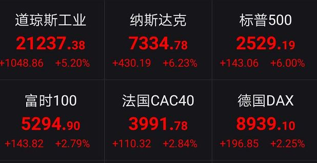
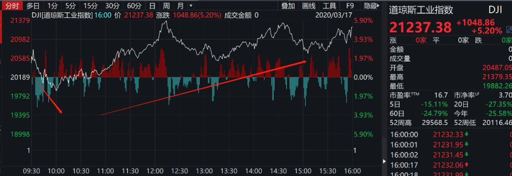
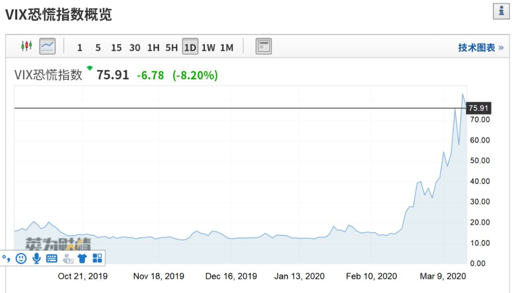
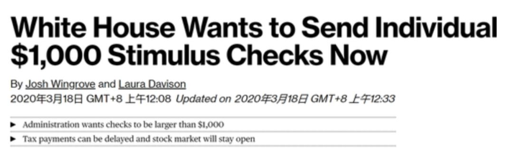

疫情蔓延终结华尔街牛市？A股震荡仍未结束
原文链接 备份链接 疫情持续在中国境外蔓延会恶化市场情绪，美欧股市最近两天持续下跌与此有关。展望未来，资本市场持续上行的希望在于：中国疫情防控企稳，世界其他地区迅速协调行动 文 |《财经》特派华盛顿记者 金焱 《财经》 …

又是惊心动魄一夜！
在疯狂降息和超级量化宽松政策失效后，美联储再度祭出救市“大杀器”，美国政府也在积极酝酿万亿刺激计划，启动“直升机撒钱”时代。
消息传出后，昨日晚间跌破20000点的道指盘中开始暴力拉升，纳斯达克指数、标普500指数先后触底反弹，美股市场上演绝地大反攻。截至美股收盘，道指暴涨超5%，指数大涨超1000点，纳斯达克和标普500指数均涨超6%。
在美股反攻行情下，欧股尾盘快速拉升，德国、法国、英国等股市主要指数收盘均有涨超2%以上。意大利、法国再度出台卖空禁令，多国政府开始启动积极救市计划。


美股上演V型大反弹
道指收盘暴涨超1000点
持续暴跌后的美股终于迎来了喘息机会。
昨日晚间，美股市场上演了一把V型大反弹。美股开盘后，三大指数先后高开，但随后指数却悉数翻绿，恐慌情绪仍未消散，道指甚至跌破20000点，抹去了特朗普执政后的全部涨幅。
不过半个小时后，美股开始触底反弹，道指盘中开始暴力拉升，盘中一度涨超7%以上。纳斯达克、标普500指数先后触底反弹，绝地反攻力量凶猛。
截至当日收盘，道琼斯工业指数大涨5.2%，报收21237.38；纳斯达克指数大涨6.23%，报收7334.78；标普500大涨6%，报收2529.19。


美股热门个股普遍上涨，苹果涨4.40%、亚马逊涨7.03%、谷歌涨3.27%、Facebook涨2.34%、微软涨8.23%、特斯拉跌3.34%、高通涨6.79%、英伟达涨10.63%、AMD涨8.19%。
美国准备向航空业提供财政援助，但航空股仍然收跌，美国联合航空公司跌13.25%、达美航空跌11.34%，波音跌4.31%。
美国抗疫概念股普遍上涨。辉瑞公司表示，正与德国生物技术公司BioNTech共同研发潜在的抗击病毒疫苗，BioNTech暴涨62.77%，辉瑞涨6.73%。Moderna涨7.05%，由Moderna研发的抗击病毒疫苗mRNA-1273已开始临床试验。
中概股回升，万达体育大涨23%、迅雷涨18%，欢聚时代涨15%。

市场情绪稍有缓和，恐慌指数VIX下跌8.2%，报75.91。

同时，国际油价全线下跌，ICE WTI原油跌2.86%，报收32.63美元/桶，布油跌3.76%报30.5美元/桶。消息面上，沙特将提高原油出口量至历史新高的1000万桶/日，加剧了原油暴跌。

美联储祭出危机“大杀器”
重启商业票据融资机制
这一次，美股的反攻行情，美联储终于发挥了作用。
昨日晚间，美国联邦储备委员会宣布，将建立商业票据融资机制（CPFF），以支持信贷流向家庭和企业。
美联储在声明中称，受疫情影响，商业票据市场近日承受“相当大的压力”，商业票据融资机制应能消除市场风险，提高企业在疫情爆发期间维持就业和投资的能力，财政部将向美联储提供100亿美元的信贷保护，这些资金将来自财政部的外汇稳定基金，除非延期，商业票据融资机制将于2021年3月17日终止。

据了解，商业票据融资机制将通过特殊目的工具（SPV）向美国商业票据发行人提供流动性支持，该工具将直接从合格公司购买评级为A1/P1（截至2020年3月17日）的无担保和资产抵押商业票据。
由于新型冠状病毒爆发，企业和家庭面临更大的不确定性，商业票据市场近几天一直处于相当大的压力之下。通过消除合格发行人无法通过展期偿还到期商业票据债务的风险，这一机制应鼓励投资者再次在商业票据市场进行定期贷款。
美联储于2008年10月创建了商业票据融资基金，以从公司发行人那里购买商业票据并恢复市场信心。此后未偿还的商业票据跌破了1万亿美元，但是近年来市场的使用再次增加。这一举措意味着，自大萧条以来，美联储首次绕过银行，直接向美国企业放贷。
分析人士表示，市场之所以对此反应激烈，因为市场认为，这才是缓解市场“美元荒”的最有效措施，公司依靠商业票据市场作为满足意外资金需求的可靠短期现金来源。
而除了美联储之外，纽约联储也在积极开展救市行动。纽约联储昨日在美股开盘后表示，当日将进行额外的隔夜回购操作，最高5000亿美元。就在周一，纽约联储也曾进行额外的隔夜回购操作，最高5000亿美元。
据悉，纽约联储本周将每天通过隔夜回购操作提供一万亿美元。纽约联储声明称，该措施是为了“确保准备金供应充足，并支持短期美元融资市场的平稳运转”。
美国酝酿万亿美元刺激计划
启动“直升机撒钱”时代
除了美联储放出大招之外，让市场更为感到兴奋的是，美国政府可能要启动“直升机撒钱”时代。
据中新网，美国财政部长姆努钦周二前往国会，与参议院共和党议员讨论第三轮新冠病毒应对方案，以抵挡疫情带来的经济危机。报道称，特朗普政府想要实施一个8500亿美元的经济刺激计划。据《华盛顿邮报》报道，白宫的提议将包括向航空业提供约500亿美元的援助。
姆努钦介绍，接下来的援助计划的细节，将包括此前批准了美联储主席鲍威尔希望使用再贴现窗口的请求；美联储的商业票据工具将支持1万亿美元的信贷市场；美国总统特朗普要求实施税收递延，总值达3000亿美元；
姆努钦称，如果不采取措施，新冠肺炎将会导致失业率飙升至20%。
姆努钦称，可能在接下来的两周内给美国人“发支票”。他说，对美国人来说，“支票”将被视为“业务中断付款”。当被问及谁会收到支票时，特朗普说，大多数美国人都会，但“年收入一百万美元”的人可能不会，“希望美国人尽快拿到钱”。

姆努钦坚持说，市场不会因为冠状病毒而关闭，即使银行设立了较短的营业时间，但也将保持开放。“9/11之后市场休市的唯一原因是技术被破坏，但是美国人应该知道，我们将竭尽所能，以确保美国人能够使用自己的股票、401K及其投资组合里的钱。”
美国“雷曼式”剧本能否奏效？
美股后续或仍将巨幅震荡
不过，美联储和政府接连启动各种刺激计划积极救市，甚至不惜拿出2008年金融危机时代的金融杀器，这些措施是否能够奏效，阻止美股继续下跌，则仍是未知数。
诺贝尔经济学奖获得者约瑟夫-斯蒂格利茨认为，美联储采取了激进政策行动，但却不足以帮助美国避免因冠状病毒疫情爆发引起的经济衰退。“鉴于不确定性，考虑到这么多人的收入锐减的事实，它最多可以帮助稳定金融市场，但很显然，它连这个没有做到。”
全球最大对冲基金桥水基金创始人瑞-达利欧表示：“新冠病毒没有吓到我，但新冠病毒疫情加上长期利率跌至零让我忧虑。”他还认为，最有针对性和规模适当的财政和货币对策来自中国。在他看来，长期利率跌至0%的下限意味着，几乎所有资产类别都将走低，因为利率下降的积极影响将不复存在（至少不多）。
高盛表示，美股的流动性已经来到了金融危机以来最糟糕的时候，目前美股做市商提供的买卖价差如同火箭般上涨，标普500期货市场的市场深度也来到了有史以来的最低水平。
Zerohedge评论称，美联储推出这种“雷曼式剧本”，表明美国现在正面临着系统性风险，其中还包括银行和公司，这种风险之前并不存在。这也导致市场在短暂做出上涨反应后，可能加剧下跌，市场还需要观察美联储还剩下什么其他弹药。
另据消息，芝商所最新表示，美国股市的熔断机制可能会调整；建议美国股市的熔断机制调整为只有7%和13%的下跌限制；建议要求ETF市场遵守像其他市场一样的规则，遵守相同的熔断规则。纽交所提议修改三级熔断的规则，纽交所提议在标普500指数波动20%后停牌。
今日早间7点50分左右，美股期货再度走跌，主要指数期货跌超3%，似乎预示着美股的反弹可能会昙花一现。

欧洲股市尾盘拉升
多国开启救市计划
在美股反攻的带动下，欧洲股市也出现了尾盘拉升的情况。
截至当日收盘，德国DAX指数、英国富时100指数、法国CAC40指数均涨超2%以上。

为了阻止股市下跌，又有多个欧洲国家加入了“禁止卖空”队列。
欧洲多个国家出台做空禁令，其中法国将禁止做空24小时；比利时金融监管机构禁止卖空及类似交易；意大利证券交易委员会发布做空禁令，禁止卖空20只意大利证交所股票；阿联酋将自3月18日起，把股票日跌幅限制在5%。菲律宾更是直接临时关闭金融市场，成为全球首个因新冠病毒疫情蔓延而关闭金融市场的国家。
除此之外，越来越多的政府救市计划正在酝酿之中。加拿大广播公司报道，加拿大总理特鲁多准备颁布的一揽子刺激措施规模将逾250亿加元。
另据消息，澳洲联储通过每日市场操作向市场注入107亿澳元，创纪录新高。澳大利亚总理莫里森表示，政府正在考虑进一步的经济措施，央行参与经济措施商讨，经济措施将集中在缓冲影响，新的经济措施制定好后将予以宣布。
美国50州全部沦陷
全球疫情仍在持续升级
不过，目前全球疫情仍在十分严重，增加了市场的担忧情绪。
据美联社报道，随着西弗吉尼亚州出现首例新冠肺炎确诊病例，全美50州全部沦陷。另据美国约翰斯·霍普金斯大学发布的实时统计数据，截至美国东部时间17日18时，美国累计新冠肺炎确诊病例5894例，死亡97例。美国国务卿蓬佩奥称，国务院有一些员工新冠病毒检测结果呈阳性。
据德国电视一台报道，根据美国约翰斯·霍普金斯大学数据，截至3月18日4时，德国共确诊9257例新冠病毒肺炎感染病例，其中死亡病例24例。
据BNO新闻网，意大利新增新冠肺炎确诊病例3526例，累计确诊病例31506例；新增死亡病例345例，累计死亡2503例。
据英国卫生和劳动保障部最新统计，截至当地时间17日上午9点，检测结果显示，英国新增407例新冠肺炎确诊病例，累计确诊1950人。
伊朗卫生部3月17日宣布，过去一天伊朗境内新增新冠肺炎感染者1178例，累计16169例，新增死亡135例，累计988例，已有5389人治愈。
韩国中央防疫对策本部通报，截至当地时间17日0时，韩国较16日0时新增84例新冠肺炎确诊病例，累计确诊病例达8320例。
不过，美国研发疫苗的进展也在加快。据新华社报道美国国家卫生研究院16日说，美国研发的一种新冠病毒疫苗当天开始进行第一阶段临床试验，首位入组志愿者已接受试验性疫苗注射。
美国国家过敏症和传染病研究所所长安东尼·福奇16日在白宫记者会上介绍，志愿者将接受间隔约28天的两次试验性疫苗手臂肌肉注射。他们将分为3组，接受注射剂量分别为每次25微克、100微克和250微克，以便评估不同剂量的安全性以及其诱导人体免疫反应的能力。
据介绍，志愿者在完成两次疫苗注射后将接受为期一年的观察。
福奇表示，此次开启疫苗第一阶段临床试验的速度创下了纪录。应对新冠病毒感染的当务之急就是要研发安全有效的疫苗，这项临床试验是实现这一目标至关重要的第一步。
中新网3月18日消息，据美国媒体报道，美国职业篮球联赛(NBA)布鲁克林篮网队队员凯文·杜兰特新冠病毒检测结果呈阳性。杜兰特向媒体表示，他目前感觉良好。
据悉，篮网队还有其他三名队员也被检测出新冠病毒呈阳性。目前，NBA球员已有7人感染新冠病毒。
当地时间3月17日下午，美国国务卿蓬佩奥表示，目前美国国务院内已经出现多例检测结果为阳性的新冠肺炎感染案例。
蓬佩奥没有给出具体数字，但称“一只手可以数得过来”。目前，美国国务院已按照相关要求对感染人员进行了处理，并不会因此而耽误国务院职能履行。
来源：中国基金报


推荐阅读

点击大图 |一周三次熔断！美股暴跌，只是疫情全球冲击下的冰山一角

点击大图 | 美联储的王炸加剧恐慌，只有疫苗才能拯救全球金融市场****

原文链接 备份链接 疫情持续在中国境外蔓延会恶化市场情绪，美欧股市最近两天持续下跌与此有关。展望未来，资本市场持续上行的希望在于：中国疫情防控企稳，世界其他地区迅速协调行动 文 |《财经》特派华盛顿记者 金焱 《财经》 …
原文链接 备份链接 当人类生存的主题被病毒、大流行病裹挟时，在白宫坐镇的特朗普、民间看好的疾病专家安东尼·福西和美联储主席鲍威尔纷纷出招，是老旧的套路还是定海神针，还未可知 文 |《财经》特派记者 金焱 发自华盛顿 编辑 | 苏琦 3 …
原文链接 备份链接 一边货币政策已经很宽松，利率已经很低了，政策腾挪空间不大；另一边市场恐惧和病毒传播却未停止，防疫拉锯战才刚刚开始，金融稳定迹象还不明显 文 |《财经》特派记者 金焱 发自华盛顿 编辑 | 苏琦 在疫情和市场的巨大双重压 …
原文链接 备份链接 美联储2月28日市场交易结束时进行了救援，发出强烈信号会尽快降息。这会使金融市场至少平静几天。市场随后反弹还是继续下滑，取决于美国及全球新冠肺炎疫情的走势 文 |《财经》特派记者 金焱 发自华盛顿 编辑 | 苏琦 世 …
原文链接 备份链接 目前美国有30个州和华盛顿特区已宣布进入紧急状态，美国各州都有紧急状态储备金，在州长宣布紧急状态后即可动用该笔基金采取抗疫措施 文 | 宋劲松 特朗普于3月13日下午宣布美国进入应对新冠肺炎紧急状态，联邦政府将启 …